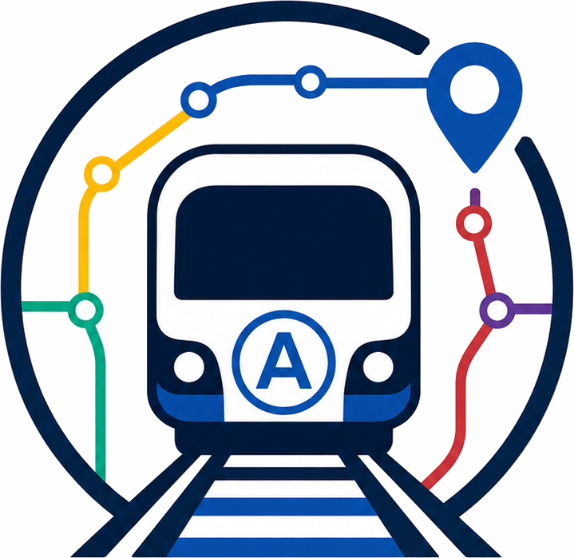

Itinéraire
Alerte réseau
Graphe
Rechercher un trajet
↕
⏱ Temps
🌱 Moins polluant
Calculer le trajet optimal
Itinéraire trouvé :
1
Optimal
0.4 g
18 min
3 stations - 1 changement - L7 → L1
Détail du trajet